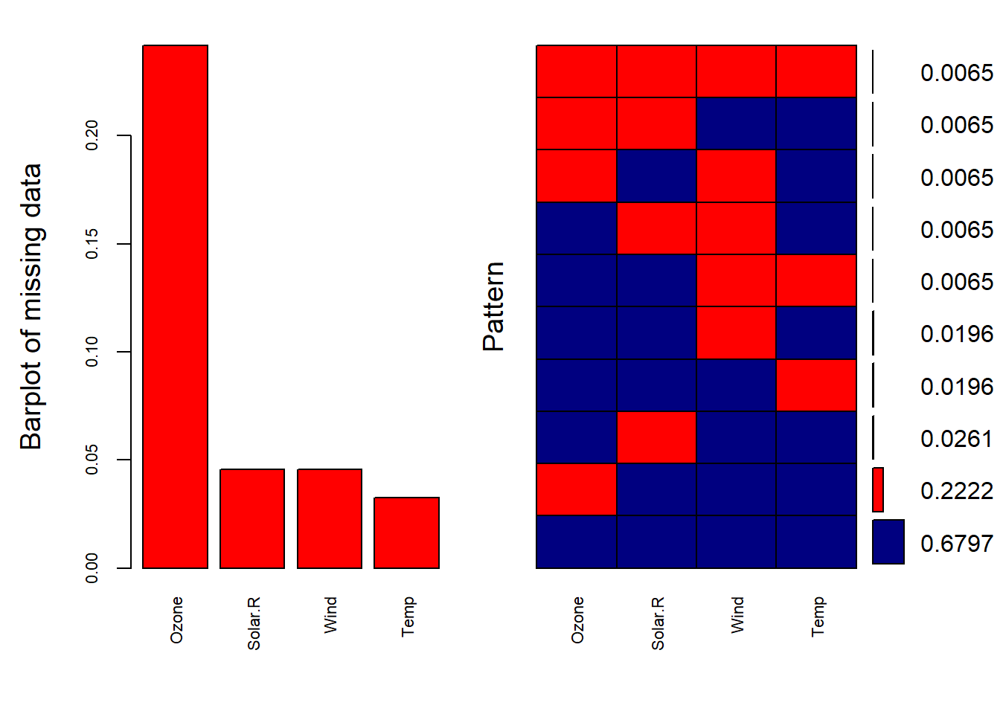
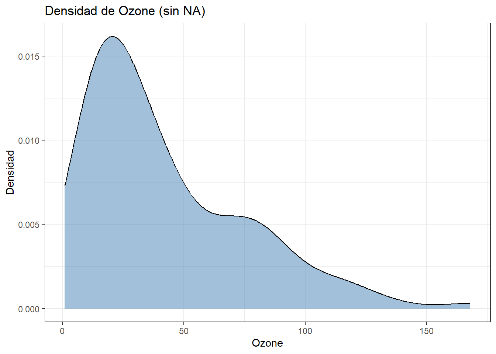

Capítulo 5 Análisis con datos faltantes y detección de atípicos
5.1 Manejo de datos faltantes
Los datos faltantes son uno de los temas menos abordados en la mayoría de los textos introductorios. Probablemente, esto se deba a que hasta hace poco abundaba más la teoría que las aplicaciones prácticas en su tratamiento. Sin embargo, con el crecimiento del análisis de datos, hoy es un asunto que no puede ignorarse, pues impacta directamente en la calidad de los resultados.
Las investigaciones más técnicas aún los consideran un reto, sobre todo desde el punto de vista matemático. Aun así, la relevancia práctica es clara: los datos faltantes están presentes en encuestas, mediciones de laboratorio, registros de salud, sistemas de monitoreo ambiental, entre muchos otros.
Esta sección presenta una introducción al tema y a las técnicas más efectivas para abordarlo. En términos generales, cuando los datos faltan, la mejor manera de tratarlos es imputarlos, no ignorarlos. Esto implica completar la información ausente con valores estimados que permitan mantener la coherencia y la validez de los análisis.
5.1.1 Consecuencias de los datos faltantes
- Dificultan la aplicación de modelos estadísticos.
- Reducen la potencia de los análisis.
- Pueden sesgar los resultados si no se tratan adecuadamente.
- En la práctica, han impedido la participación de individuos en encuestas o cuestionarios, lo que limita la representatividad de los estudios.
5.1.2 Tratamientos para los datos faltantes
Existen diferentes estrategias:
- Eliminación de casos incompletos: opción sencilla, pero que reduce el tamaño muestral y puede sesgar los resultados.
- Imputación simple: sustitución de los valores faltantes por medidas como la media, mediana o moda.
- Imputación múltiple: genera varios conjuntos de datos con imputaciones diferentes, permitiendo obtener estimaciones más robustas y reducir la incertidumbre.
En la práctica, no hay un único método correcto. Todo depende del contexto, del tipo de variable y de la magnitud del problema.
5.2 Manejo de datos atípicos
Los datos atípicos (outliers) son valores extremos que difieren significativamente del resto de las observaciones. Aunque en ocasiones corresponden a errores de medición, también pueden reflejar fenómenos reales que aportan información valiosa.
5.2.1 Consecuencias de los datos atípicos
- Distorsionan medidas estadísticas como la media y la desviación estándar.
- Afectan la estimación de parámetros en modelos de regresión.
- Pueden generar interpretaciones erróneas si no se identifican y analizan adecuadamente.
5.2.2 Tratamientos para los datos atípicos
- Detección mediante métodos gráficos (boxplot, histogramas, diagramas de dispersión) y técnicas estadísticas (z-score, IQR, modelos robustos).
- Eliminación de outliers cuando son claramente errores de medición o registros imposibles.
- Transformaciones (logarítmica, raíz cuadrada) que reducen la influencia de valores extremos.
- Métodos robustos que limitan el impacto de los outliers sin eliminarlos (regresiones robustas, estimadores no paramétricos).
En conclusión, el análisis de datos faltantes y atípicos no debe verse como un paso opcional, sino como parte esencial del preprocesamiento de datos. La validez de cualquier modelo estadístico o de machine learning depende directamente de cómo se manejen estas problemáticas.
En este documento hemos introducido tanto las técnicas de imputación como las de detección y tratamiento de valores atípicos, ofreciendo un panorama que permite avanzar hacia análisis más confiables, precisos y con base científica.
5.3 Visualización de los datos faltantes
Para demostrar la visualización de patrones de datos ausentes, primero necesitamos crear algunos valores faltantes. Para mostrar cómo utilizar la imputación múltiple en un escenario semirrealista, vamos a crear una versión del conjunto de datos mtcars con algunos valores eliminados.
Configuramos set.seed() (para garantizar la aleatoriedad determinista) y creamos una nueva variable que mantenga nuestro conjunto de datos modificado.
- Los datos se extrajeron de la revista Motor Trend US de 1974, y comprenden el consumo de combustible y 10 aspectos del diseño y el rendimiento de 32 automóviles (modelos de 1973 a 1974) (ver
mtcars).
- En primer lugar, vamos a crear siete valores faltantes en
drat(alrededor del 20%), cinco valores faltantes en la columnampg(alrededor del 15%), cinco valores faltantes en la columnacyl, tres valores faltantes enwt(alrededor del 10%), y tres valores faltantes envs.
Code
some_rows <- sample(1:nrow(miss_mtcars), 7)
miss_mtcars$drat[some_rows] <- NA
some_rows <- sample(1:nrow(miss_mtcars), 5)
miss_mtcars$mpg[some_rows] <- NA
some_rows <- sample(1:nrow(miss_mtcars), 5)
miss_mtcars$cyl[some_rows] <- NA
some_rows <- sample(1:nrow(miss_mtcars), 3)
miss_mtcars$wt[some_rows] <- NA
some_rows <- sample(1:nrow(miss_mtcars), 3)
miss_mtcars$vs[some_rows] <- NA- Ahora, vamos a crear cuatro valores faltantes en
qsec, pero sólo para los coches automáticos:
Code
- Ahora, observemos las primeras filas del nuevo conjunto de datos
## mpg cyl disp hp drat wt qsec vs am gear carb
## Mazda RX4 21.0 NA 160 110 3.90 2.620 16.46 NA 1 4 4
## Mazda RX4 Wag 21.0 6 160 110 3.90 2.875 17.02 0 1 4 4
## Datsun 710 22.8 NA 108 93 3.85 2.320 18.61 1 1 4 1
## Hornet 4 Drive 21.4 6 258 110 3.08 3.215 19.44 1 0 3 1
## Hornet Sportabout 18.7 8 360 175 3.15 3.440 17.02 0 0 3 2
## Valiant 18.1 6 225 105 NA 3.460 20.22 1 0 3 1## 'data.frame': 32 obs. of 11 variables:
## $ mpg : num 21 21 22.8 21.4 18.7 18.1 14.3 24.4 NA 19.2 ...
## $ cyl : num NA 6 NA 6 8 6 8 4 4 6 ...
## $ disp: num 160 160 108 258 360 ...
## $ hp : num 110 110 93 110 175 105 245 62 95 123 ...
## $ drat: num 3.9 3.9 3.85 3.08 3.15 NA 3.21 NA 3.92 3.92 ...
## $ wt : num 2.62 2.88 2.32 3.21 3.44 ...
## $ qsec: num 16.5 17 18.6 19.4 17 ...
## $ vs : num NA 0 1 1 0 1 NA 1 1 1 ...
## $ am : num 1 1 1 0 0 0 0 0 0 0 ...
## $ gear: num 4 4 4 3 3 3 3 4 4 4 ...
## $ carb: num 4 4 1 1 2 1 4 2 2 4 ...- Ahora vamos a visualizar los datos faltantes. La primera forma en que vamos a visualizar el patrón de los datos faltantes es utilizando la función
md.patterndel paquetemice(que es también el paquete que usaremos para imputar nuestros datos faltantes).
## disp hp am gear carb wt vs qsec mpg cyl drat
## 12 1 1 1 1 1 1 1 1 1 1 1 0
## 6 1 1 1 1 1 1 1 1 1 1 0 1
## 2 1 1 1 1 1 1 1 1 1 0 1 1
## 3 1 1 1 1 1 1 1 1 0 1 1 1
## 1 1 1 1 1 1 1 1 1 0 0 1 2
## 1 1 1 1 1 1 1 1 0 1 1 1 1
## 1 1 1 1 1 1 1 1 0 0 1 1 2
## 1 1 1 1 1 1 1 0 1 1 0 1 2
## 1 1 1 1 1 1 1 0 0 1 1 1 2
## 1 1 1 1 1 1 1 0 0 1 0 1 3
## 2 1 1 1 1 1 0 1 1 1 1 1 1
## 1 1 1 1 1 1 0 1 1 1 1 0 2
## 0 0 0 0 0 3 3 4 5 5 7 27Columnas (arriba): cada nombre corresponde a una variable del conjunto de datos (
disp,hp,am,gear,carb,wt,vs,mpg,cyl,drat,qsec, etc.).Cuadrícula de colores:
- Azul = valor observado (no faltante).
- Rosa = valor faltante (
NA). - Cada fila de la cuadrícula representa un patrón único de ausencia/presencia a través de todas las variables.
Números en el margen izquierdo: indican la frecuencia (cuántas filas del dataset) que exhiben ese patrón específico.
- Ejemplo: si ves “12” en la primera fila, significa “hay 12 observaciones con ese patrón” (a menudo, la fila superior suele ser el patrón completo: sin
NA).
- Ejemplo: si ves “12” en la primera fila, significa “hay 12 observaciones con ese patrón” (a menudo, la fila superior suele ser el patrón completo: sin
Números en el margen derecho: muestran cuántas variables faltan en ese patrón (0, 1, 2, …).
- Sirve para distinguir patrones con 1, 2 o más variables ausentes.
Números en la base (debajo de cada columna): total de valores faltantes por variable.
- Útil para ver rápidamente qué variable tiene más
NA. - En tu simulación, verás más
NAen variables a las que se los inyectaste (p. ej.,drat,mpg,cyl,wt,vs, yqsecpara automáticos).
- Útil para ver rápidamente qué variable tiene más
- Ahora vamos a visualizar el patrón de datos faltantes gráficamente utilizando el paquete
VIM, el cual debe instalar en caso de no contar con este.
A simple vista, esta representación nos muestra que la columna
dratrepresenta la mayor proporción de datos faltantes por columnas, seguida dempg,cyl,qsec,vsywt.El gráfico de la derecha nos muestra información similar a la salida de
md.pattern. Esta representación, sin embargo, facilita identificar si hay algún patrón sistemático de omisión.Interpretación de los colores:
- Celdas azules → datos no ausentes.
- Celdas rojas → datos faltantes.
- Celdas azules → datos no ausentes.
Números en la derecha del gráfico: representan la proporción de filas que muestran ese patrón de datos faltantes.
En este ejemplo, el 37.5% de las filas no contienen ningún tipo de dato faltante.
- Por otro lado, un gráfico de barras comparando la proporción de
NApor variable
Code
- Las variables con mayor número de valores faltantes son:
qsecydratcon 7 valores faltantes cada una.
mpgycylcon 5 valores faltantes cada una.
- En un segundo nivel de afectación:
wtyvscon 3 valores faltantes cada una.
- El resto de las variables (
hp,gear,disp,carb,am) presentan muy pocos o ningún dato faltante, lo que indica que no requieren un tratamiento prioritario.
En conclusión, el patrón de ausencia no está distribuido de manera uniforme en todas las variables.
- Existen columnas críticas como
qsec,drat,mpgycyl, que concentran la mayor parte de los datos ausentes.
- Para aplicar un método de imputación, será necesario:
- Evaluar si estas variables son relevantes para el análisis principal.
- Considerar imputaciones robustas como la imputación múltiple en aquellas con mayor proporción de NA.
- Posiblemente eliminar o transformar las observaciones si la proporción de ausentes supera un umbral crítico.
- Evaluar si estas variables son relevantes para el análisis principal.
- Otra forma de mirar los datos faltantes es usando el paquete de
Amelia:
- Los datos faltantes no están distribuidos al azar: se concentran en variables como
qsec,drat,cyl,mpg,vsywt.
- Existen patrones visibles: varias filas muestran faltantes en más de una variable a la vez, lo cual podría indicar un mecanismo de omisión sistemático.
- Este tipo de visualización permite identificar:
- Observaciones con muchos faltantes (filas con varias celdas blancas).
- Variables críticas con más datos ausentes.
- Observaciones con muchos faltantes (filas con varias celdas blancas).
- Parallel boxplots: El método
VIMpermite comparar las distribuciones condicionales de una variable continua según un conjunto de variables, con valores recodificados como faltantes o no faltantes, mediante múltiples diagramas de caja paralelos.
Estos diagramas son útiles para explorar si una variable continua explica la distribución de valores faltantes en otra variable. En la siguiente figura se muestra un ejemplo con la variable
ageen los datos de EU-SILC User Guide.Además del diagrama de caja estándar, se muestran diagramas de caja agrupados por valores observados (gris claro) y faltantes (gris oscuro) en los diferentes componentes de ingresos.
- El ancho de las cajas puede ser proporcional al tamaño del grupo o de tamaño igual.
- En este ejemplo no es posible utilizar la primera opción porque la proporción de valores faltantes es cercana a 0 para algunos componentes de ingresos.
- El ancho de las cajas puede ser proporcional al tamaño del grupo o de tamaño igual.
Figura 5.1: Boxplots paralelos
En muchos componentes, la presencia de valores faltantes claramente depende de la magnitud de los valores de la edad.
Por ejemplo, los valores faltantes en la variablepy080n(beneficios por desempleo) ocurren predominantemente para individuos más jóvenes. Esto indica situaciones MAR (Missing At Random) para los valores faltantes en estas variables, lo cual es información útil para los especialistas en la materia.Scatterplots: La implementación en
VIMtambién incluye boxplots para datos disponibles y faltantes en los márgenes del gráfico.- Las frecuencias de valores faltantes en una o ambas variables se representan mediante números en la esquina inferior izquierda.
- Este gráfico será denominado en adelante
marginplot.
- Las frecuencias de valores faltantes en una o ambas variables se representan mediante números en la esquina inferior izquierda.
- El diagrama de caja rojo de la izquierda muestra la distribución del número de cilindros
cyl, agrupados por datos faltantes parampg, mientras que el diagrama de caja azul muestra esta distribución para datos observados dempg. Lo mismo ocurre con los gráficos de caja decylen la parte inferior del gráfico.
Si los datos tienen mecanismo MCAR (Missing Completely At Random), se espera que los gráficos de caja rojos y azules sean muy similares.
Para más información, ver el artículo asociado: Exploring incomplete data using visualization techniques.
- Otra forma de identificar
NAs por columnas es de la siguiente forma
## NA_mpg NA_cyl NA_disp NA_hp NA_drat NA_wt NA_qsec NA_vs NA_am NA_gear NA_carb
## 1 5 5 0 0 7 3 4 3 0 0 05.4 Eliminación de datos faltantes
Uno de los métodos más utilizados por los científicos de datos para tratar valores faltantes es omitir los casos que contienen NA y analizar únicamente las observaciones completas. Este procedimiento se conoce como eliminación por lista o análisis de casos completos.
En R, se implementa con la función na.omit(), la cual elimina todas las filas que contengan uno o más valores faltantes.
- Es un método simple y rápido de aplicar.
- No requiere cálculos adicionales ni suposiciones complejas.
- Si los datos son MCAR (Missing Completely At Random), la eliminación puede generar una reducción innecesaria del tamaño muestral,lo que afecta la precisión de las estimaciones y aumenta los errores estándar.
- Si los datos no son MCAR, este método introduce sesgos importantes como medias, estimaciones de regresión, correlaciones. En consecuencia, la supresión de casos puede producir submuestras poco representativas y análisis engañosos.
airquality
Tomaremos el conjunto de datos airquality, que contiene mediciones diarias de la calidad del aire en Nueva York de mayo a septiembre de 1973.Este dataset incluye variables con valores faltantes (NA).
El conjunto de datos representa 154 días consecutivos, por lo que la eliminación de filas completas puede afectar la continuidad temporal y, en consecuencia, cualquier análisis de series de tiempo.
- Para este ejemplo, eliminaremos algunos puntos de datos del conjunto.
- En el caso de variables categóricas, la sustitución de valores faltantes no siempre es aconsejable.
- Algunas prácticas comunes consisten en sustituir los valores faltantes por la moda de la variable.
- Sin embargo, esta práctica es cuestionable porque puede introducir sesgos y distorsionar la distribución real.
- En el caso de variables categóricas, la sustitución de valores faltantes no siempre es aconsejable.
En este caso, como no hay variables categóricas con valores faltantes, no es necesario aplicar este tratamiento. Si fuera necesario, siempre es posible añadirlas nuevamente al conjunto de datos más adelante.
Podemos hacer una primera inspección de los datos y de sus valores faltantes con:
| Ozone | Solar.R | Wind | Temp | Month | Day |
|---|---|---|---|---|---|
| 41 | 190 | 7.4 | 67 | 5 | 1 |
| 36 | 118 | 8.0 | 72 | 5 | 2 |
| 12 | 149 | 12.6 | 74 | 5 | 3 |
| 18 | 313 | 11.5 | 62 | 5 | 4 |
| NA | NA | 14.3 | 56 | 5 | 5 |
| 28 | NA | 14.9 | 66 | 5 | 6 |
- Agreguemos más datos faltantes
## Ozone Solar.R Wind Temp
## Min. : 1.00 Min. : 7.0 Min. : 1.700 Min. :57.00
## 1st Qu.: 18.00 1st Qu.:115.8 1st Qu.: 7.400 1st Qu.:73.00
## Median : 31.50 Median :205.0 Median : 9.700 Median :79.00
## Mean : 42.13 Mean :185.9 Mean : 9.806 Mean :78.28
## 3rd Qu.: 63.25 3rd Qu.:258.8 3rd Qu.:11.500 3rd Qu.:85.00
## Max. :168.00 Max. :334.0 Max. :20.700 Max. :97.00
## NA's :37 NA's :7 NA's :7 NA's :5| Ozone | Solar.R | Wind | Temp |
|---|---|---|---|
| 41 | 190 | 7.4 | NA |
| 36 | 118 | 8.0 | NA |
| 12 | 149 | 12.6 | NA |
| 18 | 313 | NA | NA |
| NA | NA | NA | NA |
| 28 | NA | NA | 66 |
Nótese que la variable
Ozonees la que contiene más puntos de datos faltantes.A continuación, vamos a profundizar en los patrones de datos ausentes. Suponiendo que los datos sean MCAR (Missing Completely At Random), demasiados datos faltantes también pueden representar un problema.
Como regla práctica, se considera que un umbral máximo seguro es el 5% del total de datos en conjuntos grandes. Si una variable o muestra presenta más del 5% de datos faltantes, probablemente deba excluirse del análisis.
Para verificarlo, revisamos:
- Las características (columnas) con más del 5% de datos faltantes.
- Las muestras (filas) en las que falta más del 5% de los datos.
- Las características (columnas) con más del 5% de datos faltantes.
Para saber el conteo y el porcentaje de
NAs usemos la funciónpivot_longer, este sirve para reorganizar esa tabla “ancha” en un formato largo
Code
## # A tibble: 4 × 3
## Variable count percent
## <chr> <int> <dbl>
## 1 Ozone 37 24.2
## 2 Solar.R 7 4.58
## 3 Wind 7 4.58
## 4 Temp 5 3.27Vemos que a la variable
Ozonele falta casi el 25% de los puntos de datos, por lo que podríamos considerar la posibilidad de eliminarla del análisis o de reunir más mediciones. Las demás variables están por debajo del umbral del 5%, por lo que podemos mantenerlas en el análisis.Usemos la función
md.pattern()para conocer mejor el patrón de los datos que faltan.
## Temp Solar.R Wind Ozone
## 104 1 1 1 1 0
## 34 1 1 1 0 1
## 3 1 1 0 1 1
## 1 1 1 0 0 2
## 4 1 0 1 1 1
## 1 1 0 1 0 2
## 1 1 0 0 1 2
## 3 0 1 1 1 1
## 1 0 1 0 1 2
## 1 0 0 0 0 4
## 5 7 7 37 56La salida nos indica que 104 muestras están completas, que a 34 muestras les falta sólo la medición de
Ozone, que a 4 muestras les falta sólo el valor deSolar.R, y así sucesivamente.Una representación visual quizás más útil puede obtenerse utilizando el paquete
VIM, de la siguiente manera:
Code

##
## Variables sorted by number of missings:
## Variable Count
## Ozone 0.24183007
## Solar.R 0.04575163
## Wind 0.04575163
## Temp 0.03267974El gráfico nos ayuda a entender que casi el 70% de las muestras no presentan valores faltantes, mientras que al 22% les falta el valor de
Ozoney las restantes muestran otros patrones de ausencia.A través de este enfoque, la situación parece un poco más clara. Otra aproximación visual útil es un gráfico de caja especial.
- Aquí estamos limitados a trazar sólo 2 variables a la vez, pero aun así podemos obtener algunas ideas interesantes.
- El diagrama de caja rojo de la izquierda muestra la distribución de datos faltantes para
Ozone,mientras que el diagrama de caja azul muestra la distribución de los puntos de datos restantes. - Lo mismo ocurre con los gráficos de caja de
Solar.Ren la parte inferior del gráfico. - Si nuestra suposición de que los datos son MCAR (Missing Completely At Random) es correcta, entonces esperamos que los gráficos de caja rojos y azules sean muy similares.
- El diagrama de caja rojo de la izquierda muestra la distribución de datos faltantes para
- A continuación, realizamos una simple función
na.omit()para eliminar los casos que tienenNAs. Vemos que todas las filas que contenían algúnNAen cualquier variable son eliminadas del dataframe.
## Ozone Solar.R Wind Temp
## 12 16 256 9.7 69
## 13 11 290 9.2 66
## 14 14 274 10.9 68
## 15 18 65 13.2 58
## 16 14 334 11.5 64
## 17 34 307 12.0 66- Dibujemos los histogramas antes y después de la imputación/eliminación usando
ggplot
Code
library(ggplot2)
library(tidyverse)
library(gridExtra)
ggp1 <- ggplot(data.frame(value=data$Ozone), aes(x=value)) +
geom_histogram(fill="#FBD000", color="#E52521", alpha=0.9) +
ggtitle("Data Original ") +
xlab('Ozone') + ylab('Frecuencia') +
theme_bw() +
theme(plot.title = element_text(size=15))
ggp2 <- ggplot(data.frame(value=data_omit$Ozone), aes(x=value)) +
geom_histogram(fill="#43B047", color="#049CD8", alpha=0.9) +
ggtitle("Eliminación por fila") +
xlab('Ozone') + ylab('Frecuencia') +
theme_bw() +
theme(plot.title = element_text(size=15))
grid.arrange(ggp1, ggp2, ncol = 2)5.5 Imputación de datos con el promedio o mediana
La imputación es el proceso mediante el cual se reemplazan estos valores perdidos por estimaciones que permitan completar la base de datos y continuar con el análisis.
Existen múltiples técnicas de imputación. Entre las más sencillas y utilizadas están la imputación por media y la imputación por mediana.
5.5.1 La importancia de la distribución
Antes de imputar, es recomendable analizar la distribución de los datos:
Distribución aproximadamente normal (simétrica): La media y la mediana son muy similares. En este caso, imputar con la media es razonable, ya que no introduce mucho sesgo y conserva el promedio de la variable.
Distribución asimétrica o con outliers: La media se desplaza hacia los valores extremos, dejando de ser representativa. En este escenario, la mediana es más adecuada porque refleja mejor la tendencia central real y es robusta frente a valores atípicos.
En conclusión: la forma de la distribución guía la elección del método de imputación.
5.5.2 Imputación con la media
La imputación por la media consiste en reemplazar cada valor faltante por el promedio de los valores observados en la misma variable.
- Método rápido y fácil de implementar.
- Mantiene el promedio de la variable en el conjunto de datos.
- Adecuado si la distribución es normal y no hay outliers significativos.
- Sensible a la presencia de valores extremos.
- Reduce la variabilidad.
- Puede distorsionar correlaciones con otras variables.
5.5.3 Imputación con la mediana
La imputación por la mediana consiste en reemplazar los valores faltantes por el valor central de los datos observados.
- Robusta frente a la presencia de valores atípicos.
- Preserva mejor la tendencia central cuando la distribución es asimétrica.
- Más confiable en variables sesgadas.
- Al igual que la media, reduce la variabilidad.
- Reemplaza todos los valores perdidos por un único valor fijo.
- Puede alterar las relaciones estadísticas entre variables.
- Continuemos con el ejemplo de
airquality:
## Ozone Solar.R Wind Temp
## Min. : 1.00 Min. : 7.0 Min. : 1.700 Min. :56.00
## 1st Qu.: 18.00 1st Qu.:115.8 1st Qu.: 7.400 1st Qu.:72.00
## Median : 31.50 Median :205.0 Median : 9.700 Median :79.00
## Mean : 42.13 Mean :185.9 Mean : 9.958 Mean :77.88
## 3rd Qu.: 63.25 3rd Qu.:258.8 3rd Qu.:11.500 3rd Qu.:85.00
## Max. :168.00 Max. :334.0 Max. :20.700 Max. :97.00
## NA's :37 NA's :7
## Month Day
## Min. :5.000 Min. : 1.0
## 1st Qu.:6.000 1st Qu.: 8.0
## Median :7.000 Median :16.0
## Mean :6.993 Mean :15.8
## 3rd Qu.:8.000 3rd Qu.:23.0
## Max. :9.000 Max. :31.0
## Code
## # A tibble: 6 × 3
## Variable count percent
## <chr> <int> <dbl>
## 1 Ozone 37 24.2
## 2 Solar.R 7 4.58
## 3 Wind 0 0
## 4 Temp 0 0
## 5 Month 0 0
## 6 Day 0 0- Haremos imputación de datos a la variable
Ozone. Empecemos con un diagrama de densidad sin los datos faltantes
Code

- Hagamos una prueba de normalidad de los datos
##
## Asymptotic one-sample Kolmogorov-Smirnov test
##
## data: scale(ozone_noNA)
## D = 0.14799, p-value = 0.01243
## alternative hypothesis: two-sided- Como los datos de
Ozoneno tienen comportamiento normal, realizaremos la imputación de los datos con la mediana
Code
- Hagamos una comparación con la data original y los datos imputados usando gráficos de densidad
Code
new_data %>%
ggplot() +
geom_density(aes(x = Ozone, fill = "Original"), alpha = 0.5) +
geom_density(aes(x = Ozone_mediana, fill = "Imputado (mediana)"), alpha = 0.5) +
theme_bw() +
labs(title = "Densidad: Ozone Original vs Ozone Imputado (mediana)",
x = "Ozone",
y = "Densidad",
fill = "Tipo de dato") +
scale_fill_manual(values = c("Original" = "steelblue", "Imputado (mediana)" = "red"))- La imputación con la mediana es adecuada en este caso porque la variable no sigue una distribución normal y está sesgada con outliers. Sin embargo, este método reduce la variabilidad y distorsiona la forma real de la distribución al concentrar valores en un solo punto.
- Ahora, hagamos la comparación con un diagrama de cajas y bigotes
Code
new_data %>%
select(Ozone, Ozone_mediana) %>%
pivot_longer(cols = c(Ozone, Ozone_mediana),
names_to = "Tipo",
values_to = "Valor") %>%
mutate(Tipo = recode(Tipo,
Ozone = "Original (sin NA)",
Ozone_mediana = "Imputado (mediana)")) %>%
ggplot(aes(x = Tipo, y = Valor, fill = Tipo)) +
geom_boxplot(alpha = 0.6) +
scale_fill_manual(values = c("Original (sin NA)" = "steelblue",
"Imputado (mediana)" = "red")) +
theme_bw() +
labs(title = "Boxplot: Ozone Original vs Ozone Imputado (mediana)",
x = "Tipo de dato",
y = "Ozone",
fill = "Conjunto")- La imputación con la mediana es adecuada porque la variable no es normal y presenta outliers, pero sacrifica la variabilidad. El método es útil como aproximación robusta, aunque no conserva del todo la distribución original.
- Hagamos una prueba para ver si las distribuciones difieren o no.
Code
##
## Asymptotic two-sample Kolmogorov-Smirnov test
##
## data: ozone_noNA and new_data$Ozone_mediana
## D = 0.12092, p-value = 0.2897
## alternative hypothesis: two-sided- La imputación de los valores faltantes de
Ozonecon lamediana no modificó significativamente la distribuciónde los datos en comparación con los valores originales.
- Ahora, como en tu caso imputaste con la mediana, la comparación correcta es usar la prueba de Wilcoxon de rangos (también llamada Mann–Whitney U test cuando son muestras independientes)
Code
##
## Wilcoxon rank sum test with continuity correction
##
## data: ozone_noNA and new_data$Ozone_mediana
## W = 8874, p-value = 1
## alternative hypothesis: true location shift is not equal to 0- Esto confirma que la imputación con la mediana preserva el centro de la distribución. Aunque vimos que se reduce la variabilidad (la dispersión disminuye), el valor central de la distribución se mantiene intacto.
5.6 Imputación de datos con el paquete mice
5.6.1 Paquete MICE
El paquete MICE (Multivariate Imputation by Chained Equations) en R es una herramienta poderosa para la imputación de valores faltantes. A diferencia de métodos simples como la imputación por media o mediana, mice implementa la imputación múltiple, lo cual permite capturar la incertidumbre de los datos faltantes.
Cabe resaltar que
- Los datos faltantes representan incertidumbre.
- La imputación simple (media/mediana) reemplaza cada
NApor un único valor, reduciendo la variabilidad.
miceen cambio genera m conjuntos imputados, cada uno con valores distintos para losNA.
- Esto se hace modelando cada variable con faltantes a partir de las demás variables en el dataset (cadena de ecuaciones).
- Los resultados pueden combinarse para obtener inferencias robustas.
5.6.2 Parámetros principales de mice
method: define el método de imputación."mean"→ imputación con la media.
"pmm"(default) → Predictive Mean Matching.
"cart"→ árboles de decisión.
"rf"→ Random Forest.
m: número de datasets imputados.- Default:
m = 5.
- Permite capturar la incertidumbre generando varias versiones del dataset.
- Default:
maxit: número de iteraciones.- Default:
maxit = 50.
- Controla cuántas veces se repite la imputación hasta converger.
- Default:
seed: semilla para garantizar reproducibilidad.complete(): extrae un dataset completo imputado.
5.6.3 Métodos disponibles en mice
Algunos de los métodos más relevantes son:
- Numéricos:
mice.impute.mean→ imputación por la media.
mice.impute.norm→ regresión normal.
mice.impute.pmm→ Predictive Mean Matching.
mice.impute.cart→ árboles de decisión.
mice.impute.rf→ Random Forest.
- Categóricos:
mice.impute.logreg→ regresión logística.
mice.impute.polyreg→ regresión polinómica multinomial.
mice.impute.polr→ regresión logística ordinal.
- Otros:
mice.impute.2l.norm→ modelos jerárquicos.
mice.impute.passive→ imputación pasiva (variables derivadas).
mice.impute.jomoImpute→ modelos bayesianos mixtos.
5.6.4 Ventajas y limitaciones de MICE
mice
- Captura la incertidumbre de los valores faltantes.
- Compatible con múltiples tipos de variables (numéricas, categóricas, jerárquicas).
- Permite métodos avanzados (PMM, RF, CART, regresión, etc.).
mice
- Más complejo que imputación simple.
- Mayor costo computacional.
- Requiere conocimiento estadístico para elegir métodos adecuados.
Comparación de métodos de imputación
| Método | Ventajas | Limitaciones | Recomendación |
|---|---|---|---|
| Media | Simple, rápido | Sensible a outliers, reduce variabilidad | Distribuciones normales sin outliers |
| Mediana | Robusto, útil con sesgos | Reduce variabilidad, concentra valores | Distribuciones asimétricas o con outliers |
| PMM | Valores realistas, evita extremos | Más complejo, requiere iteraciones | Método recomendado en la mayoría de casos |
| RandomForest | Captura relaciones no lineales | Computacionalmente costoso | Datos con alta complejidad |
5.6.5 Imputación de datos con emparejamiento predictivo medio
El método Predictive Mean Matching PMM es uno de los más usados en mice porque combina lo predictivo con lo realista.
- ¿Qué hace el método
pmm?- Para cada valor faltante, mice ajusta un modelo de regresión usando las demás variables como predictores.
- Con ese modelo se predice el valor esperado del caso con el
NA. - Se buscan en los datos observados los k casos más cercanos a esa predicción (vecinos).
- El valor faltante se reemplaza con uno de esos valores reales observados, elegido al azar.
Las ventajas de este método PMM utiliza aleatoriedad en la imputación para introducir variabilidad en las estimaciones de los valores faltantes. Esto ayuda a evitar la sobreestimación o subestimación sistemática de los valores imputados y a capturar la incertidumbre asociada con la imputación de datos faltantes. La introducción de aleatoriedad también puede ayudar a mejorar la robustez y generalización del modelo de imputación, especialmente en situaciones donde los datos faltantes siguen patrones complejos o no aleatorios.
- Realicemos la imputacion con los datos faltantes para
OzonoySolar.Rpueden ser imputados por la funciónmice().
Code
library(mice)
# Imputación múltiple usando el paquete mice
imp <- mice(
data, # datos con NA
m = 5, # número de datasets imputados
maxit = 50, # iteraciones de imputación
method = "pmm", # método: Predictive Mean Matching
seed = 500, # semilla para reproducibilidad
printFlag = FALSE # no mostrar mensajes en consola
)- Podemos recuperar el conjunto de datos completo utilizando la función
complete():
## Ozone Solar.R Wind Temp Month Day
## 1 41 190 7.4 67 5 1
## 2 36 118 8.0 72 5 2
## 3 12 149 12.6 74 5 3
## 4 18 313 11.5 62 5 4
## 5 14 237 14.3 56 5 5
## 6 28 82 14.9 66 5 6- Separemos los datos y realicemos un grafico de comparación para la variable
Ozone:
Code
# Separar originales e imputados (Ozone)
original_ozone <- data$Ozone[!is.na(data$Ozone)] # valores originales
imputed_only_ozone <- imp_df$Ozone[is.na(data$Ozone)] # solo imputados
# Crear un data.frame combinado
ozone_df <- data.frame(
Valor = c(original_ozone, imputed_only_ozone),
Tipo = c(rep("Original", length(original_ozone)),
rep("Imputado (PMM)", length(imputed_only_ozone)))
)
# Gráfico de densidad
ggplot(ozone_df, aes(x = Valor, fill = Tipo)) +
geom_density(alpha = 0.5) +
labs(title = "Densidad: Ozone Original vs Imputado (PMM)",
x = "Ozone",
y = "Densidad",
fill = "Tipo de dato") +
theme_bw() +
scale_fill_manual(values = c("Original" = "steelblue",
"Imputado (PMM)" = "purple"))- Realicemos las pruebas estadísticas:
##
## Exact two-sample Kolmogorov-Smirnov test
##
## data: original_ozone and imputed_only_ozone
## D = 0.29124, p-value = 0.00992
## alternative hypothesis: two-sidedCode
##
## Wilcoxon rank sum test with continuity correction
##
## data: original_ozone and imputed_only_ozone
## W = 1796.5, p-value = 0.1369
## alternative hypothesis: true location shift is not equal to 0Como las pruebas realizadas, la imputación con la mediana es la mas optima, hasta el momento.
5.7 Imputación de datos con modelos de regresión
Para esta parte realizaremos un modelo de regresión usando random forest
Code
# Imputación múltiple con Random Forest
imput <- mice(
data, # datos con NA
m = 5, # número de datasets imputados
maxit = 50, # iteraciones de imputación
method = "rf", # método: Random Forest
seed = 500, # semilla para reproducibilidad
printFlag = FALSE # no mostrar mensajes en consola
)
imp_df2 <- complete(imput)
head(imp_df2)## Ozone Solar.R Wind Temp Month Day
## 1 41 190 7.4 67 5 1
## 2 36 118 8.0 72 5 2
## 3 12 149 12.6 74 5 3
## 4 18 313 11.5 62 5 4
## 5 21 99 14.3 56 5 5
## 6 28 299 14.9 66 5 6Code
# Separar originales e imputados (Ozone)
original_ozone <- data$Ozone[!is.na(data$Ozone)] # valores originales
imputed_only_ozone <- imp_df2$Ozone[is.na(data$Ozone)] # solo imputados
# Crear un data.frame combinado
ozone_df2 <- data.frame(
Valor = c(original_ozone, imputed_only_ozone),
Tipo = c(rep("Original", length(original_ozone)),
rep("Imputado (Random Forest)", length(imputed_only_ozone)))
)
# Gráfico de densidad
ggplot(ozone_df2, aes(x = Valor, fill = Tipo)) +
geom_density(alpha = 0.5) +
labs(title = "Densidad: Ozone Original vs Imputado (Random Forest)",
x = "Ozone",
y = "Densidad",
fill = "Tipo de dato") +
theme_bw() +
scale_fill_manual(values = c("Original" = "steelblue",
"Imputado (Random Forest)" = "purple"))
##
## Exact two-sample Kolmogorov-Smirnov test
##
## data: original_ozone and imputed_only_ozone
## D = 0.099953, p-value = 0.8542
## alternative hypothesis: two-sidedCode
##
## Wilcoxon rank sum test with continuity correction
##
## data: original_ozone and imputed_only_ozone
## W = 2287, p-value = 0.5493
## alternative hypothesis: true location shift is not equal to 0Con todo lo realizado, podemos ver que el metodo de regresión random forest, nos da una mejor imputación con respecto a la mediana y el método pmm.
5.8 Detección de datos atípicos
5.8.1 Valores atípicos
Un valor atípico es una observación que se aleja considerablemente de las demás, es decir,
un punto de datos que difiere significativamente del resto.
Según Enderlein (1987), los valores atípicos son aquellos que se desvían tanto de las demás observaciones que podría suponerse que provienen de un mecanismo de muestreo diferente.
5.8.1.1 Importancia del contexto
Una observación debe compararse siempre con otras obtenidas bajo el mismo fenómeno antes de calificarla como atípica.
Por ejemplo:
- Una persona con 200 cm de altura podría considerarse un valor atípico si se compara con la población general.
- Sin embargo, no sería atípica si se compara con la población de jugadores de baloncesto.
Esto ilustra que la definición de atipicidad depende del contexto.
5.8.1.2 Métodos de detección en R
Existen diversos enfoques para detectar valores atípicos, que van desde técnicas descriptivas hasta pruebas formales:
- Técnicas sencillas (estadística descriptiva):
- mínimo y máximo,
- histograma,
- boxplot,
- percentiles.
- mínimo y máximo,
- Métodos más avanzados:
- Filtro de Hampel,
- Test de Grubbs,
- Test de Dixon,
- Pruebas de Rosner.
- Filtro de Hampel,
5.8.1.3 Consideraciones prácticas
- Algunas pruebas estadísticas requieren ausencia de valores atípicos para obtener conclusiones válidas.
- La eliminación de valores atípicos no siempre es recomendable: debe hacerse con precaución y justificación, pues podría eliminar información valiosa del fenómeno estudiado.
5.8.2 Estadísticas descriptivas
El primer paso para detectar valores atípicos en R es comenzar con algunos estadísticos descriptivos, en particular con el mínimo y el máximo.
En R, esto puede hacerse fácilmente con la función:
Para ilustrar el proceso, utilizaremos el dataset mpg, asociado al consumo de combustible de 1999 a 2008 para 38 modelos de coches populares (ver ggplot2::mpg).
Este conjunto de datos es útil porque contiene variables numéricas de interés (como hwy y cty) en las que se pueden identificar posibles valores atípicos mediante estadísticos descriptivos.
- Carguemos los datos
## # A tibble: 6 × 11
## manufacturer model displ year cyl trans drv cty hwy fl class
## <chr> <chr> <dbl> <int> <int> <chr> <chr> <int> <int> <chr> <chr>
## 1 audi a4 1.8 1999 4 auto(l5) f 18 29 p compa…
## 2 audi a4 1.8 1999 4 manual(m5) f 21 29 p compa…
## 3 audi a4 2 2008 4 manual(m6) f 20 31 p compa…
## 4 audi a4 2 2008 4 auto(av) f 21 30 p compa…
## 5 audi a4 2.8 1999 6 auto(l5) f 16 26 p compa…
## 6 audi a4 2.8 1999 6 manual(m5) f 18 26 p compa…## Min. 1st Qu. Median Mean 3rd Qu. Max.
## 12.00 18.00 24.00 23.44 27.00 44.00- El mínimo y el máximo son, respectivamente, el primer y el último valor de
hwy. Como alternativa, también pueden calcularse con las funcionesmin()ymax()
## [1] 12## [1] 44- Un claro error de codificación, como un peso de 786 kg (1733 libras) para un humano, ya se detectará fácilmente con esta técnica tan sencilla.
- Un histograma es otra forma básica para detectar datos atípicos
Code
library(ggplot2)
ggplot(dat, aes(x = hwy)) +
geom_histogram(
bins = 30,
fill = "#0c4c8a",
color = "white", # bordes blancos para contraste
alpha = 0.8
) +
geom_density(
aes(y = ..count..),
color = "red",
size = 1,
alpha = 0.6
) +
labs(
title = "Distribución de consumo en carretera (hwy)",
subtitle = "Datos del dataset mpg (ggplot2)",
x = "Millas por galón en carretera",
y = "Frecuencia"
) +
theme_bw(base_size = 13) +
theme(
plot.title = element_text(face = "bold"),
plot.subtitle = element_text(size = 10, color = "gray40")
)- Con base en este histograma, se evidencia que hay un par de observaciones más altas que todas las demás.
- Además de los histogramas, los boxplots también son útiles para detectar posibles valores atípicos. Considere nuevamente a manera de ejemplo la columna
hwy.
Code
# Detectamos los outliers usando la regla del IQR
outliers <- dat %>%
mutate(id = row_number()) %>% # identificador de fila
group_by() %>%
mutate(
Q1 = quantile(hwy, 0.25),
Q3 = quantile(hwy, 0.75),
IQR = Q3 - Q1,
lower = Q1 - 1.5 * IQR,
upper = Q3 + 1.5 * IQR
) %>%
filter(hwy < lower | hwy > upper)
# Boxplot con etiquetas de valores atípicos
ggplot(dat, aes(x = "", y = hwy)) +
geom_boxplot(fill = "#0c4c8a", outlier.colour = "red", outlier.shape = 16) +
geom_text(
data = outliers,
aes(label = hwy), # mostramos el valor
color = "red",
vjust = -0.5
) +
labs(
title = "Boxplot del consumo en carretera (hwy)",
subtitle = "Valores atípicos señalados y etiquetados",
x = "",
y = "Millas por galón en carretera"
) +
theme_bw(base_size = 13)
- También es posible extraer los valores de los posibles valores atípicos basándose en el criterio
IQRgracias a la funciónboxplot.stats()$out:
## [1] 44 44 41- Como puede ver, en realidad hay 3 puntos considerados como posibles valores atípicos; 2 observaciones con un valor de 44 y 1 observación con un valor de 41. Gracias a la función
which()es posible extraer el número de fila correspondiente a estos valores atípicos:
## [1] 213 222 223- Con esta información, ahora puede volver fácilmente a las filas específicas del conjunto de datos para verificarlas, o imprimir todas las variables para estos valores atípicos:
## # A tibble: 3 × 11
## manufacturer model displ year cyl trans drv cty hwy fl class
## <chr> <chr> <dbl> <int> <int> <chr> <chr> <int> <int> <chr> <chr>
## 1 volkswagen jetta 1.9 1999 4 manua… f 33 44 d comp…
## 2 volkswagen new beetle 1.9 1999 4 manua… f 35 44 d subc…
## 3 volkswagen new beetle 1.9 1999 4 auto(… f 29 41 d subc…5.8.3 Percentiles
Este método de detección de valores atípicos se basa en los percentiles. Con este enfoque, todas las observaciones que se encuentren fuera del intervalo formado por los percentiles 2.5 y 97.5 se considerarán como posibles valores atípicos:
\[ I_{out} = \left[ q_{0.025}, \; q_{0.975} \right]^C \]
También pueden considerarse otros percentiles (por ejemplo, el 1 y el 99, o el 5 y el 95) para construir el intervalo.
Los valores de los percentiles inferior y superior (y, por lo tanto, los límites inferior y superior del intervalo) pueden calcularse con la función
quantile()en R.
Code
## # A tibble: 1 × 2
## lower_bound upper_bound
## <dbl> <dbl>
## 1 14 35.2- Según este método, todas las observaciones por debajo de \(14\) y por encima de \(35.175\) se considerarán posibles valores atípicos. Los números de fila de las observaciones fuera del intervalo pueden extraerse de la siguiente manera
Code
## [1] 55 60 66 70 106 107 127 197 213 222 223## # A tibble: 11 × 1
## hwy
## <int>
## 1 12
## 2 12
## 3 12
## 4 12
## 5 36
## 6 36
## 7 12
## 8 37
## 9 44
## 10 44
## 11 41## # A tibble: 11 × 11
## manufacturer model displ year cyl trans drv cty hwy fl class
## <chr> <chr> <dbl> <int> <int> <chr> <chr> <int> <int> <chr> <chr>
## 1 dodge dakota pi… 4.7 2008 8 auto… 4 9 12 e pick…
## 2 dodge durango 4… 4.7 2008 8 auto… 4 9 12 e suv
## 3 dodge ram 1500 … 4.7 2008 8 auto… 4 9 12 e pick…
## 4 dodge ram 1500 … 4.7 2008 8 manu… 4 9 12 e pick…
## 5 honda civic 1.8 2008 4 auto… f 25 36 r subc…
## 6 honda civic 1.8 2008 4 auto… f 24 36 c subc…
## 7 jeep grand che… 4.7 2008 8 auto… 4 9 12 e suv
## 8 toyota corolla 1.8 2008 4 manu… f 28 37 r comp…
## 9 volkswagen jetta 1.9 1999 4 manu… f 33 44 d comp…
## 10 volkswagen new beetle 1.9 1999 4 manu… f 35 44 d subc…
## 11 volkswagen new beetle 1.9 1999 4 auto… f 29 41 d subc…- Hay 11 valores atípicos potenciales según el método de los percentiles. Para reducir este número, puede establecer los percentiles en 1 y 99:
Code
## # A tibble: 3 × 11
## manufacturer model displ year cyl trans drv cty hwy fl class
## <chr> <chr> <dbl> <int> <int> <chr> <chr> <int> <int> <chr> <chr>
## 1 volkswagen jetta 1.9 1999 4 manua… f 33 44 d comp…
## 2 volkswagen new beetle 1.9 1999 4 manua… f 35 44 d subc…
## 3 volkswagen new beetle 1.9 1999 4 auto(… f 29 41 d subc…5.8.4 Filtro de Hampel
Otro método, conocido como filtro de Hampel, consiste en considerar como valores atípicos aquellos valores que se encuentran fuera del intervalo formado por la mediana, más o menos 3 desviaciones absolutas de la mediana (MAD):
\[ I = [ \tilde{X} - 3 \cdot MAD, \ \tilde{X} + 3 \cdot MAD ] \]
donde
- MAD es la desviación absoluta de la mediana.
- Se define como la mediana de las desviaciones absolutas respecto a la mediana:
\[ MAD = k \cdot \text{median} \left( |X_i - \tilde{X}| \right) \]
Aquí, \(\tilde{X} = \text{median}(X)\) es la mediana de los datos.
- El parámetro \(k\) corresponde al factor de escala, que por defecto en R se toma como \(k = 1\).
- Para aplicar este método en R, primero se establecen los límites del intervalo con las funciones
median()ymad(). Los valores que se encuentren fuera de este rango se consideran atípicos.
Code
## # A tibble: 1 × 2
## lower_bound upper_bound
## <dbl> <dbl>
## 1 9 39- Según este método, todas las observaciones por debajo de 9 y por encima de 39 se considerarán como posibles valores atípicos. Los números de fila de las observaciones que están fuera del intervalo pueden entonces extraerse de la siguiente manera
Code
## [1] 213 222 223## # A tibble: 3 × 11
## manufacturer model displ year cyl trans drv cty hwy fl class
## <chr> <chr> <dbl> <int> <int> <chr> <chr> <int> <int> <chr> <chr>
## 1 volkswagen jetta 1.9 1999 4 manua… f 33 44 d comp…
## 2 volkswagen new beetle 1.9 1999 4 manua… f 35 44 d subc…
## 3 volkswagen new beetle 1.9 1999 4 auto(… f 29 41 d subc…5.8.5 Prueba de Grubbs
La prueba de Grubbs permite detectar si el valor más alto o más bajo de un conjunto de datos es un valor atípico. Este test analiza un valor atípico a la vez (ya sea el valor máximo o el mínimo), y por ello las hipótesis nula y alternativa se formulan así:
- \(H_0\): El valor más alto/bajo no es un valor atípico.
- \(H_1\): El valor más alto/bajo es un valor atípico.
La interpretación sería
- Si el valor p es inferior al nivel de significancia elegido (generalmente \(\alpha = 0.05\)), se rechaza \(H_0\) y se concluye que el valor más bajo o más alto es un valor atípico.
- Si el valor p es mayor o igual a \(\alpha\), no se rechaza \(H_0\), lo que significa que el valor extremo no puede considerarse un atípico.
la prueba de Grubbs no es apropiada para tamaños de muestra \(n \leq 6\)
Para realizar la prueba de Grubbs en
R, utilizamos la funcióngrubbs.test()del paquete outliers. La función recibe distintos argumentos, entre ellos el parámetrotype:type = 10: prueba si el valor máximo es un valor atípico.type = 11: prueba si tanto el mínimo como el máximo son valores atípicos.type = 20: prueba si hay dos valores atípicos en una cola.
##
## Grubbs test for one outlier
##
## data: dat$hwy
## G = 3.45274, U = 0.94862, p-value = 0.05555
## alternative hypothesis: highest value 44 is an outlierEl valor p obtenido es aproximadamente 0.056. Al nivel de significación del 5% (\(\alpha = 0.05\)), no rechazamos la hipótesis nula de que el valor más alto (44) no es un valor atípico.
En otras palabras, no tenemos evidencia suficiente para afirmar que 44 es un valor atípico.
Por defecto, la prueba se realiza sobre el valor más alto (como se muestra en la salida de
R). La hipótesis alternativa sería: el valor más alto (44) es un valor atípico.
- Si se desea realizar la prueba para el valor más bajo, basta con añadir el argumento:
##
## Grubbs test for one outlier
##
## data: dat$hwy
## G = 1.92122, U = 0.98409, p-value = 1
## alternative hypothesis: lowest value 12 is an outlier- El valor \(p\) es 1. Al nivel de significación del \(5\%\), no rechazamos la hipótesis de que el valor más bajo 12 no es un valor atípico.
- A modo de ilustración, sustituiremos ahora una observación por un valor más extremo y realizaremos la prueba de
Grubbsen este nuevo conjunto de datos. Reemplacemos el \(34^{th}\) por un valor de 212
##
## Grubbs test for one outlier
##
## data: dat$hwy
## G = 13.72240, U = 0.18836, p-value < 2.2e-16
## alternative hypothesis: highest value 212 is an outlierEl valor \(p\) es menor que la significancia. Al nivel de significancia del 5%, concluimos que el valor más alto 212 es un valor atípico.
5.8.6 Prueba de Dixon
Al igual que la prueba de Grubbs, la prueba de Dixon se utiliza para comprobar si un único valor bajo o alto es un valor atípico. Por lo tanto, si se sospecha que hay más de un valor atípico, la prueba debe realizarse en cada valor atípico sospechoso de forma individual.
La prueba de Dixon es especialmente útil para muestras de pequeño tamaño (generalmente \(n \leq 25\)).
Para realizar la prueba de Dixon en R, se utiliza la función dixon.test() del paquete outliers. Sin embargo, es importante destacar que:
- La prueba sólo puede aplicarse a conjuntos de datos pequeños.
- R restringe su aplicación a conjuntos de entre 3 y 30 observaciones.
- En este ejemplo, limitamos el análisis a las 20 primeras observaciones del conjunto de datos.
##
## Dixon test for outliers
##
## data: subdat$hwy
## Q = 0.57143, p-value = 0.006508
## alternative hypothesis: lowest value 15 is an outlier- Los resultados muestran que el valor más bajo, 15, es un valor atípico, con valor \(p\) menor que la significancia del \(5\%\).
- Para comprobar el valor más alto, basta con añadir el argumento
opuesto = TRUEa la funcióndixon.test().
##
## Dixon test for outliers
##
## data: subdat$hwy
## Q = 0.25, p-value = 0.8582
## alternative hypothesis: highest value 31 is an outlier- Los resultados muestran que el valor más alto 31 no es un valor atípico (\(p-valor = 0.8582\)).
- Es una buena práctica comprobar siempre los resultados de la prueba estadística de valores atípicos con el diagrama de caja para asegurarse de que hemos comprobado todos los valores atípicos potenciales
Code
- A partir del
boxplot, vemos que también podríamos aplicar la prueba deDixonsobre el valor 20 además del valor 15 realizado anteriormente.
- Esto puede hacerse encontrando el número de fila del valor mínimo, excluyendo este número de fila del conjunto de datos y aplicando finalmente la prueba de
Dixona este nuevo conjunto de datos
## # A tibble: 6 × 11
## manufacturer model displ year cyl trans drv cty hwy fl class
## <chr> <chr> <dbl> <int> <int> <chr> <chr> <int> <int> <chr> <chr>
## 1 audi a4 quattro 3.1 2008 6 auto… 4 17 25 p comp…
## 2 audi a4 quattro 3.1 2008 6 manu… 4 15 25 p comp…
## 3 audi a6 quattro 2.8 1999 6 auto… 4 15 24 p mids…
## 4 audi a6 quattro 3.1 2008 6 auto… 4 17 25 p mids…
## 5 audi a6 quattro 4.2 2008 8 auto… 4 16 23 p mids…
## 6 chevrolet c1500 subu… 5.3 2008 8 auto… r 14 20 r suv##
## Dixon test for outliers
##
## data: subsubdat$hwy
## Q = 0.44444, p-value = 0.1297
## alternative hypothesis: lowest value 20 is an outlier- Los resultados muestran que el segundo valor más bajo, \(20\), no es un valor atípico (\(p-valor = 0.13\))
5.8.7 Prueba de Rosner
La prueba de Rosner para detectar valores atípicos tiene las siguientes ventajas. Se utiliza para detectar varios valores atípicos a la vez (a diferencia de la prueba de Grubbs y Dixon, que debe realizarse de forma iterativa para detectar múltiples valores atípicos), y está diseñado para evitar el problema del enmascaramiento, en el que un valor atípico cercano a otro atípico puede pasar desapercibido. A diferencia de la prueba de Dixon, hay que tener en cuenta que la prueba de Rosner es más apropiada cuando el tamaño de la muestra es grande (\(n\geq 20\)). Por tanto, volvemos a utilizar el conjunto de datos inicial dat, que incluye 234 observaciones.
- Para realizar la prueba de
Rosnerutilizamos la funciónrosnerTest()del paqueteEnvStats. Esta función requiere al menos 2 argumentos: los datos y el número de presuntos valores atípicosk(conk = 3como número de presuntos valores atípicos por defecto). Para este ejemplo, establecemos que el número de presuntos valores atípicos sea igual a 3, tal y como sugiere el número de posibles valores atípicos esbozado en el boxplot al principio del artículo.
- Los resultados interesantes se ofrecen en la tabla
all.stats
## i Mean.i SD.i Value Obs.Num R.i+1 lambda.i+1 Outlier
## 1 0 24.21795 13.684345 212 34 13.722399 3.652091 TRUE
## 2 1 23.41202 5.951835 44 213 3.459098 3.650836 FALSE
## 3 2 23.32328 5.808172 44 222 3.559936 3.649575 FALSE- Basándonos en la prueba de
Rosner, vemos que sólo hay un valor atípico (véase la columna de valores atípicos), y que es la observación \(34\) (véaseObs.Num) con un valor de \(212\) (véaseValue).
5.9 Tratamiento de datos atípicos
Una vez identificados los valores atípicos y habiendo decidido enmendar la situación según la naturaleza del problema, puede considerar uno de los siguientes enfoques.
Imputación: Este método se ha tratado en detalle en la discusión sobre el tratamiento de los valores faltantes.
Capping: Para los valores que se encuentran fuera de los límites de \(1.5 \cdot IQR\) podríamos poner un tope sustituyendo las observaciones que se encuentran fuera del límite inferior por el valor del \(5^{th}\) percentíl y las que se encuentran por encima del límite superior, por el valor del \(95^{th}\) percentíl. A continuación se muestra un código de ejemplo que logra esto
Code
## [1] 29 29 31 30 26 26
En otro enfoque, los valores atípicos pueden sustituirse por valores faltantes (NA) y luego pueden predecirse considerándolos como una variable de respuesta. Ya hemos hablado de cómo predecir los valores faltantes en la sección anterior.
-
Realice un EDA para el conjunto de datos
(Diabetes Dataset).
Este dataset consta de variables médicas predictoras (independientes) y una variable objetivo (dependiente: resultado).
Sustituya todos los valores nulos “ausentes” porNAy realice el respectivo análisis de datos faltantes. -
Exprese en R el siguiente código escrito en Python que sustituye los ceros por
NA:
df.loc[df["Glucose"] == 0.0, "Glucose"] = np.NAN df.loc[df["BloodPressure"] == 0.0, "BloodPressure"] = np.NAN df.loc[df["SkinThickness"] == 0.0, "SkinThickness"] = np.NAN df.loc[df["Insulin"] == 0.0, "Insulin"] = np.NAN df.loc[df["BMI"] == 0.0, "BMI"] = np.NAN -
Aplique imputación de datos usando el paquete
miceen R con los siguientes métodos:
-
method = “pmm” -
method = “norm.predict” -
method = “norm.nob” -
method = “norm”
-
-
Identifique valores atípicos en cada variable del dataset utilizando técnicas estadísticas vistas en clase
(Imputación/Capping/Predicción, test de Rosner, Dixon, Grubbs, Hampel, Percentiles, Boxplots, Histogramas y Descriptivos).
Finalmente, realice imputación de los datos atípicos con base en lo desarrollado en el ítem anterior.